BME | Anatomy - Circulatory System
Fluid Distribution, Internal Environment Homeostasis, Blood Components, and Functions
Fluids: Intracellular and Extracellular
Internal Environment: Extracellular Fluid
Blood Components: Plasma + Blood Cells (Red Blood Cells + White Blood Cells + Platelets)
Functions of Blood: Transportation, Defense and Protection, Maintaining Homeostasis
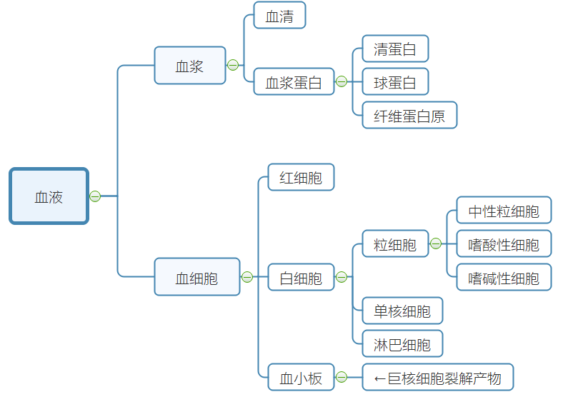
Blood
Plasma
Plasma Proteins: Albumin (maintains blood colloid osmotic pressure), Globulin, Fibrinogen (involved in clotting)
Non-protein Nitrogen: Nitrogen-containing substances in plasma, excluding proteins, eliminated by the kidneys
Plasma Osmotic Pressure = Plasma Crystalloid Osmotic Pressure + Plasma Colloid Osmotic Pressure
| Plasma Crystalloid Osmotic Pressure | Plasma Colloid Osmotic Pressure |
|---|---|
| Main Component | Minor Component |
| Formed by crystalloids | Formed by plasma proteins |
| Maintains cellular water balance | Maintains vascular water balance |
pH: Slightly alkaline. Maintained through buffering to regulate acidity.
Primary Buffering System: /
Red Blood Cells
Structure: Biconcave disc without a nucleus or organelles
Physiological Features: Flexibility, suspension stability in plasma, osmotic fragility (swell and burst in hypotonic solution)
Materials for Production: Hemoglobin (iron and proteins)
Maturation Factors: Folic acid and Vitamin
Erythropoietin: Stimulates RBC proliferation and differentiation. (Erythropoietin and burst-promoting factor)
Lifespan: Approximately 120 days.
Destruction: Damaged by hemolysis (intravascularly) or phagocytosed by macrophages (extravascularly)
Organs involved in RBC Production and Metabolism: Bone marrow, kidneys (production-secretion of erythropoietin), liver (breakdown)
White Blood Cells
Classification: Granulocytes (Neutrophils, Eosinophils, Basophils), Monocytes, Lymphocytes
Diapedesis: Except for lymphocytes, all WBCs undergo amoeboid movement to cross capillary walls into tissues
Chemotaxis: WBCs exhibit directed movement towards certain chemical substances
Basic Functions: Participation in body defense mechanisms
Platelets
Function: Physiological hemostasis
Source: Fragments of megakaryocytes
Physiological Hemostasis
Concept: The ability of normal blood flow to stop within minutes after vascular injury in a healthy individual
Process: ① Local vascular constriction; ② Formation of platelet plug; ③ Surrounding the platelet plug with fibrin mesh; ④ Clot retraction and dissolution
Blood Coagulation: Transformation of blood from a liquid state to a gel state, involving a complex series of enzyme-mediated reactions with coagulation factors
Coagulation Factors: Substances in plasma and tissues directly involved in blood clotting
Activation of Factor X occurs through intrinsic and extrinsic pathways
Intrinsic Pathway: All coagulation factors originate from blood
Extrinsic Pathway: Factor III originates from tissues
Anticoagulant Significance: Prevents widespread clotting. Cellular anticoagulant system (endothelial cells + reticuloendothelial cells) + humoral anticoagulant system
Fibrinolysis Significance: Prevents thrombus formation, maintains blood flow.
Process: Activation of plasminogen → degradation of fibrin and fibrinogen
Circulation, Reserve Blood Volume, RBC Agglutination, Agglutinogen, Agglutinin, Blood Type Classification, Cross-Matching Concept
Circulating Blood Volume: Majority of blood flows within the cardiovascular system.
Reserve Blood: Small portion of blood remains in organs like liver and lungs.
RBC Agglutination: Blood of different types clumps together
Agglutinogen: Specific antigens on the RBC membrane involved in agglutination reaction
Agglutinin: Specific antibodies in serum reacting with agglutinogens on RBCs
Blood Type Classification: ABO (AB - universal recipient, O - universal donor)
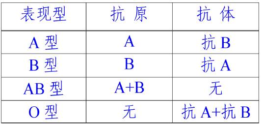
Cross-Matching Experiment – Antigen-Antibody Reaction
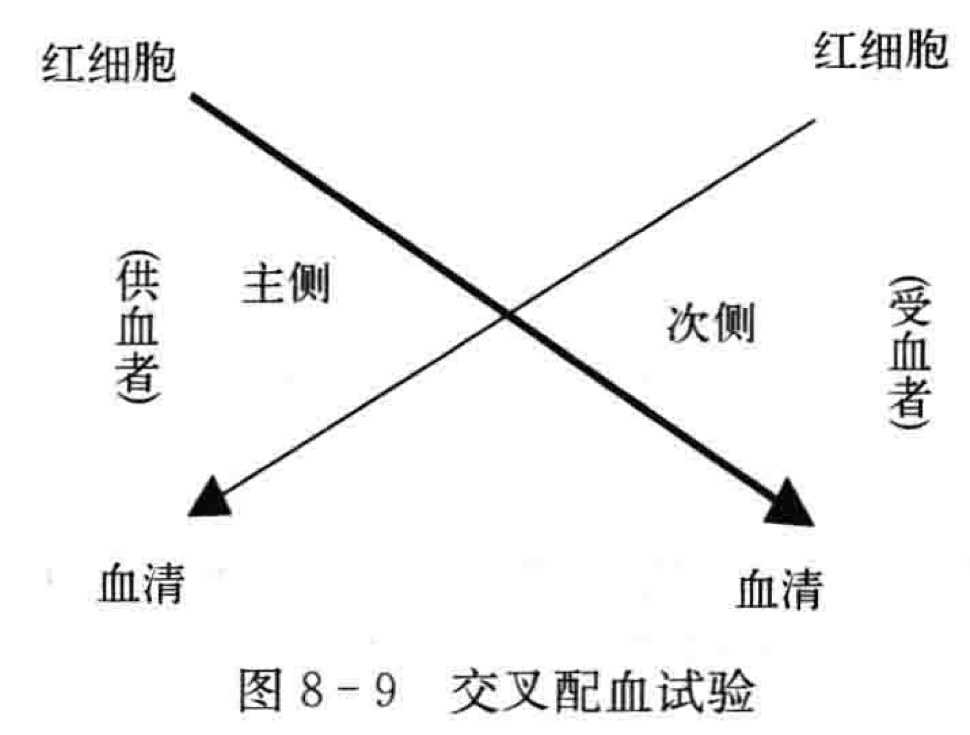
Circulatory System
Fundamental Concepts of Circulatory Pathways
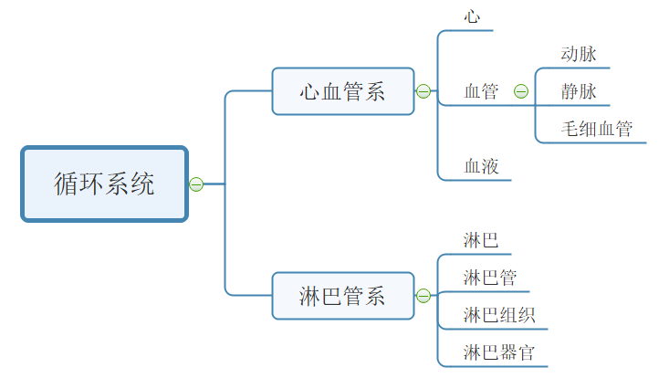
Systemic Circulation: Left Ventricle - Aorta - Capillaries - Veins - Superior and Inferior Vena Cava - Right Atrium
Pulmonary Circulation: Right Ventricle - Pulmonary Trunk - Pulmonary Capillaries - Pulmonary Veins - Left Atrium
Pulmonary Circulation: Arterial vessels carry deoxygenated blood; venous vessels carry oxygenated blood
Cardiac Structure
Base: Predominantly Left Atrium, Small portion Right Atrium
Apex: Left Ventricle
Chambers: Left Atrium, Left Ventricle, Right Atrium, Right Ventricle
Conduction System: Sinoatrial Node, Atrioventricular Junction, Bundle of His, Purkinje Fiber Network
Sinoatrial Node: Pacemaker of the heart
Atrioventricular Junction: Only pathway for excitation to move from atria to ventricles. Atrioventricular node lacks intrinsic rhythm; delays conduction into ventricles
Bundle of His: Divides into left and right branches
Purkinje Fiber Network
Blood Vessels
Difference in Structure between Arteries and Veins: Veins have larger lumens, thinner walls, less elasticity, and contain valves.
Structural Differences in Large, Medium, and Small Arteries: Large arteries (rich in elastic fibers in the vessel wall), medium arteries (abundant smooth muscle, strong contractile ability, distribution of sympathetic nerve fibers), small arteries (high resistance to blood flow).
Venous Valves: Oriented toward the heart to prevent blood reflux, aiding venous return to the heart.
Major Branches of the Aorta: Ascending aorta (gives rise to left and right coronary arteries), aortic arch (brachiocephalic trunk, left common carotid artery, left subclavian artery), descending aorta (divided into thoracic and abdominal aorta by aortic hiatus).
Jugular Vein Angle: Confluence of the internal jugular and subclavian veins, also the location where the right lymphatic duct and thoracic duct empty into the veins.
Hepatic Portal Vein: Non-paired visceral branches in the abdominal cavity (capillaries) → hepatic portal vein → lungs (capillaries) → hepatic veins.
Vascular Distribution Patterns: Symmetrical distribution, adaptation to function (vascular distribution adapts to organ function), parallel with nerves, shortest distance distribution.
Mechanism of Lymph Production and Transport
Lymph eventually returns to veins.
Lymph Production: Pressure difference between tissue fluid and lymphatic fluid inside lymphatic capillaries (driving force), tissue fluid (source).
Lymph Transport: Contraction of smooth muscle in lymphatic vessels controlled by lymphatic valve and lymphatic vessel wall → “lymphatic pump.”
Thoracic Duct and Right Lymphatic Duct
Systemic lymphatics merge into two major lymphatic vessels: thoracic duct and right lymphatic duct.
Thoracic Duct: Longest and thickest systemic lymphatic vessel, drains lymph from the left upper and entire lower body.
Right Lymphatic Duct: Drains lymph from the right upper body, empties into the right jugular angle.
Cardiac Electrophysiology
Mechanisms and Similarities/Differences in Action Potentials of Working Cells and Pacemaker Cells.
Working Cells and Pacemaker Cells
Cardiac Myocytes = Working Cells + Pacemaker Cells
Working Cells: Form the atrial and ventricular walls. Excitability, conductivity, contractility. Function: Contraction.
Pacemaker Cells: Specialized conductive system myocardial cells. Excitability, conductivity, automaticity. Function: Generating and propagating excitations, controlling rhythmic heart activity.
Cardiac Myocytes: Excitability, conductivity, contractility, automaticity.
Smooth Muscle Cells: Excitability, automaticity, conductivity, contractility.
Action Potential Mechanism of Working Cells
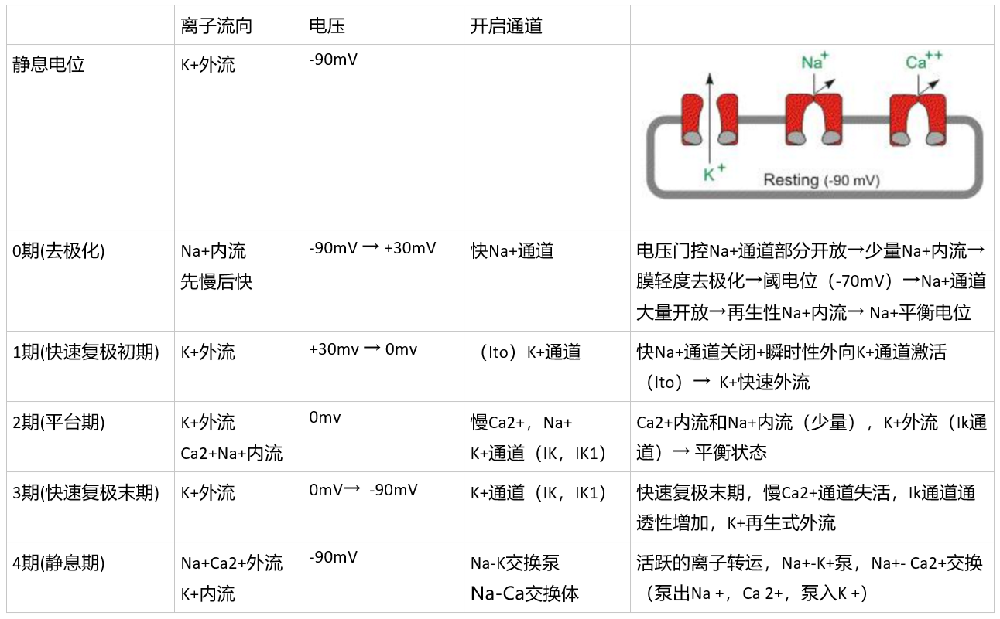
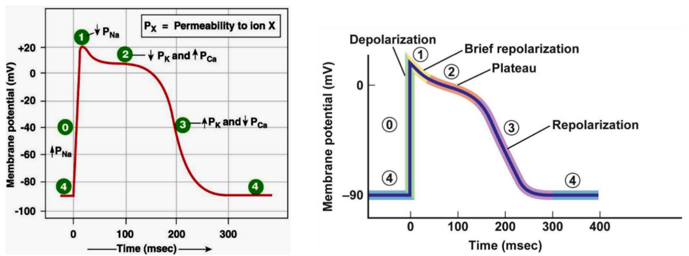
Action Potential Mechanism of Pacemaker Cells
| Phase 0 Depolarization | -70 → -40mV | Activation of Ca channels causing Ca influx |
|---|---|---|
| Phase 4 Automatic Repolarization | (Slow-response cells) K+ efflux ↓, Ca+ influx ↑; Ca+ influx > K+ efflux, automatic depolarization; (Fast-response cells) Slow Na+ channels, Na+ influx, automatic depolarization |
| Fast-Response Cells | Slow-Response Cells | |
|---|---|---|
| Definition | Rapid depolarization due to opening of fast Na+ channels (e.g., Purkinje cells) | Slow Ca+ channels opening leading to slow depolarization (e.g., sinus node P cells) |
| Contrast | Lower maximum and threshold potentials; Low amplitude of Phase 0 depolarization, slow, long, not steep |
Differences
Pacemaker cells automatically depolarize to threshold, initiating a new action potential.
Excitability, Automaticity, Conductivity of Cardiac Myocytes
Electrophysiology (excitability, automaticity, conductivity); Mechanical characteristics (contractility).
Excitability
Influencing Factors: 1. Difference between resting potential and threshold potential; 2. Status of ion channels (Fast-Na at rest; Slow-Ca at rest).
Periodic Changes: Effective refractory period (absolute refractory period → local excitable period (excitable but no action potential) → relative refractory period (action potential possible with a higher threshold) → supernormal period (action potential possible with a lower threshold))
→ Relative refractory period (stimulation above threshold produces action potential) → Supranormal period (stimulation below threshold produces action potential)
Automaticity
Cardiac Pacemaker: Different levels of automaticity (Sinus node-normal pacemaker, latent pacemaker). Control of the sinus node over latent pacemakers is through “overdrive suppression” (preemptive occupation by the sinus node’s action potential before the latent pacemaker reaches the threshold) and “overdrive suppression” (the pacemaker cell undergoing depolarization faster than the intrinsic rhythm occurs, followed by a period of rest to gradually restore automaticity).
Influencing Factors (Phase 4 depolarization rate):
- Difference between maximum repolarization potential and threshold potential;
- Rate of Phase 4 depolarization (sympathetic-adrenaline-increased automaticity, vagus-acetylcholine-decreased automaticity).
Conductivity (Measured by propagation speed)
Functional syncytium: Excitation spreads throughout the heart, ensuring synchronized myocardial activity.
Atrioventricular Delay: Slow conduction at the atrioventricular junction causes a delay in excitation here.
Significance: Prevents simultaneous atrial and ventricular contraction, aiding ventricular filling and ejection.
Conduction Sequence: Sinus node-left and right atria-atrioventricular junction-bundle of His-Purkinje cells-ventricular muscle
Influencing Factors:
- Structural factors: Diameter of myocardial cells (larger diameter, faster conduction); Number and open state of gap junction connections between cells (more connections, faster conduction);
- Physiological factors: Phase 0 depolarization rate and amplitude; Membrane potential level; Excitability of adjacent unexcited area membranes.
Contractility
Characteristics: 1) Dependency on extracellular Ca2+; 2) “All or none” contraction; 3) No complete tetanic contraction; 4) Premature contractions can occur.
Effects of Chemical and Physical Factors on Physiological Characteristics of Cardiac Muscle (High Potassium/High Calcium)
K+: Initially increases excitability then decreases (K+ significantly increases → Na+ channel inactivation → loss of excitability), decreases contractility (K competes with Ca inhibiting effect, decreasing Ca influx).
Ca2+: Sustained increase in contractility (initially: excitation-contraction coupling enhancement) (later: calcium standstill-continuing shortening).
Basic Processes in the Cardiac Cycle
Atrial Contraction → Ventricular Contraction → Entire Heart Diastole
Atrial and ventricular diastole are longer than systole.
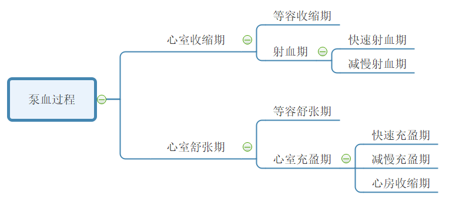
| Isovolumetric Contraction Phase | Closure of atrioventricular valves to opening of aortic valve |
|---|---|
| Rapid Ejection Phase | Ventricular muscle contraction causes an increase in ventricular pressure, blood is ejected rapidly into the aorta. Ventricular and aortic pressures reach their peaks |
| Reduced Ejection Phase | Ventricular and aortic pressures decrease. Blood flows into the aorta due to inertia. |
| Isovolumetric Relaxation Phase | Closure of atrioventricular valves, aortic valve closed |
| Rapid Filling Phase | Ventricular relaxation causes a decrease in ventricular pressure, blood rushes into the ventricles |
| Reduced Filling Phase | Blood flows slowly into the ventricles |
| Atrial Contraction Period | Atrial contraction delivers a small amount of blood into the ventricles |
| Time | Blood | Pressure Gradient | |
|---|---|---|---|
| Isovolumetric Contraction Phase | AV valves close, aortic valve closed | Remains in the ventricle | Atrial pressure < Ventricular pressure < Aortic pressure |
| Rapid Ejection Phase/Reduced Ejection Phase | AV valves close, aortic valve open | Rapid ejection into aorta | Atrial pressure < Aortic pressure < Ventricular pressure |
| Isovolumetric Relaxation Phase | AV valves close, aortic valve closed | / | Atrial pressure < Ventricular pressure < Aortic pressure |
| Rapid Filling Phase/Reduced Filling Phase/Atrial Contraction Period | AV valves open, aortic valve closed | Fill the ventricles | Ventricular pressure < Aortic pressure, Atrial pressure |
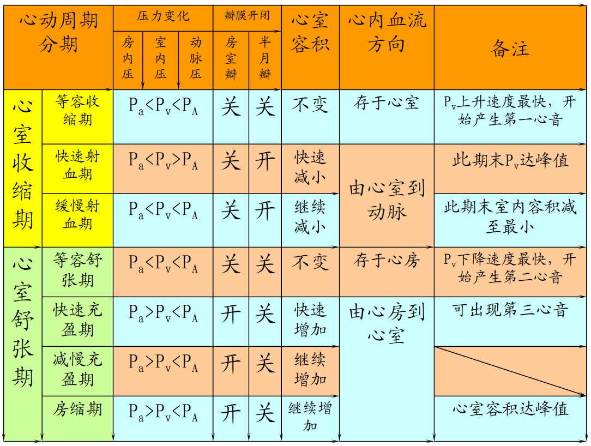
Roles of Various Cardiac Structures in the Cardiac Cycle
Pressure Gradient is the main driving force pushing blood flow between the atria, ventricles, and the aorta.
Contraction and relaxation of the Ventricular Muscle are fundamental causes of intra-cavity pressure changes, leading to the generation of pressure gradients between the atria and ventricles, as well as between the ventricles and the aorta.
Cardiac Valves opening and closing activities play a crucial role in changing intra-cavity pressures and ensuring unidirectional blood flow.
Concepts Related to Cardiac Output and Influencing Factors
Concepts Related to Cardiac Output
【oaicite:9】: The volume of blood ejected by one ventricle in a single heartbeat.
【oaicite:8】
【oaicite:7】: Total volume of blood ejected per minute by one ventricle.
【oaicite:6】: Cardiac output calculated per unit body surface area.
【oaicite:5】: Work done by the ventricle in one contraction.
Note: Convert stroke volume from L to N. So, effectively: Stroke Work (J) = Stroke Volume (L) × 13.6kg/L × 9.8N/kg × (Mean Arterial Pressure mmHg - Mean Atrial Pressure mmHg) × 0.001
【oaicite:4】: Ventricular output per minute.
Cardiac Reserve: The ability of cardiac output to increase with the body’s metabolic needs. It depends on stroke volume and heart rate reserve.
Influencing Factors
Stroke volume depends on preload, afterload, and myocardial contractility.
-
【oaicite:3】: End-diastolic volume of the ventricle** → Initial length of ventricular muscle → Ventricular preloadEffects of preload on stroke volume:
-
Length-tension regulation (Starling mechanism), changing contraction intensity of myocardial cells by altering initial length of the heart muscle itself — regulates stroke volume to balance ventricular ejection volume with venous return volume.
-
Venous return volume > Ejection volume → Filling pressure (total ventricular filling volume at end-diastole) ↑ → Starling mechanism (length-tension regulation) → Stroke volume ↑ (more return flow, more ejection)
Factors affecting preload: Venous return volume, residual blood volume in the ventricle after ejection.
-
-
【oaicite:2】: The resistance encountered by the ventricle during ejection is the aortic pressure.Effects of afterload on stroke volume: (Frank-Starling mechanism) Increase in arterial blood pressure → Decrease in stroke volume → Increase in residual blood volume → Increase in end-diastolic volume → Length-tension regulation → Increase in myocardial contraction → Increase in stroke volume
Influencing factors: Ventricular wall tension during ejection (+)
-
【oaicite:1】Effects of myocardial contraction ability on stroke volume: Length-tension regulation (adjusting stroke volume by changing myocardial contraction ability)
Increase in blood pressure → Decrease in stroke volume → Length-tension regulation (constant initial length of the heart muscle) → Increase in myocardial contraction ability → Increase in stroke volume
Influencing factors: Activation of cross-bridges (increasing Ca concentration or increasing affinity of myosin for actin); Myosin ATPase activity in the myosin head (thyroid hormone +)
-
【oaicite:0】——NeuralEffects of heart rate on stroke volume: Within a certain range, increase in heart rate → Increase in stroke volume (if too high, inadequate filling)
Influencing factors: Increase in sympathetic activity → adrenaline, increase in thyroid hormone → decrease in heart rate; Increase in vagus activity → decrease in heart rate
Basic Concepts of Heart Sounds
Heart Sounds: Vibrations caused by heart contraction, valve closure, changes in blood velocity, and blood striking the ventricular and aortic walls.
First Heart Sound: Occurs during ventricular systole, closure of the atrioventricular valves, marks the beginning of ventricular contraction.
Second Heart Sound: Occurs during ventricular diastole, closure of the semilunar valves, marks the beginning of ventricular relaxation.
Basic Concepts of Electrocardiogram (ECG)
ECG: Records electrical changes occurring during cardiac excitation on the body surface using electrodes.
P-wave: Reflects the process of atrial depolarization, not recordable.
QRS complex: Reflects the process of ventricular depolarization.
T-wave: Reflects the process of ventricular repolarization.
PR interval: Reflects atrioventricular conduction time.
ST-segment: Reflects the plateau phase.
QT interval: Marks the beginning of ventricular excitation to complete repolarization.
ECG records the combined effects of electrical activity of many myocardial cells on the body surface.
Locations of Laminar and Turbulent Flow, Blood Flow Resistance, and Influencing Factors
Laminar Flow (consistent movement direction of particles): Occurs in small blood vessels.
Turbulent Flow (inconsistent movement direction of particles): Occurs in fast-flowing blood, large vessel diameters, low blood viscosity, blood encounters obstacles, and at vessel bifurcations and rough surfaces.
Blood Flow Resistance: Resistance encountered by blood flow within blood vessels.
Factors affecting blood flow resistance: Blood vessel radius and blood viscosity.
Factors affecting blood viscosity: Hematocrit, blood shear rate, blood lipids, and vessel diameter.
Principles and Influencing Factors of Arterial Blood Pressure Formation
Arterial Blood Pressure ≈ Blood Pressure ≈ Aortic Pressure
Formation Principles
Prerequisite: Adequate blood volume
Driving force: Contraction of the heart muscle
Resistance: Peripheral resistance of arterioles and capillaries
Condition: Elasticity of the aorta and large arteries’ walls (elastic recoil force of large arterial walls is a secondary force propelling blood flow during diastole)
Systolic/Diastolic pressure: Refers to aortic blood pressure
Factors Affecting Blood Pressure
Systolic pressure primarily reflects the magnitude of stroke volume, while diastolic pressure mainly reflects peripheral resistance.
| Condition | Systolic Pressure | Diastolic Pressure | Pulse Pressure |
|---|---|---|---|
| Increased stroke volume | Increased | - | Increased |
| Increased heart rate | Increased | Increased | Decreased |
| Increased peripheral resistance | Increased | Increased | Decreased |
| Decreased elastic recoil of aortic walls | Increased | Decreased | Increased |
Concept of Pulse and Mechanism of Formation
Pulse in arteries occurs due to periodic changes in pressure and volume within the arteries, leading to periodic oscillations in arterial wall.
Mechanism: During left ventricular contraction, blood is ejected into the aorta. Due to aortic compliance and peripheral resistance, some blood temporarily remains in the artery during systole, causing passive arterial distension. As the ventricle stops ejecting blood during diastole, the aorta’s elastic recoil creates the pulsation of the vessel walls. (Some blood remains in arteries → arterial distension → cessation of ventricular ejection → aorta’s elastic recoil). Pulse propagates along the arterial wall at a speed faster than blood flow.
Factors Affecting Venous Blood Pressure, Central and Peripheral Venous Pressures, and Venous Return
Influencing Factors: Gravity → Venous hydrostatic pressure (depends on the vessel’s position and vertical distance from right atrium)
Central Venous Pressure: Blood pressure in the right atrium and large veins within the thoracic cavity (right atrium’s pressure is lowest ≈ 0)
Peripheral Venous Pressure: Blood pressure in veins of various organs
Venous Return:
| Systemic Mean Filling Pressure | + |
|---|---|
| Cardiac Contractility | + (Increased contractility → decreased end-diastolic volume → decreased intraventricular pressure → increased venous return) |
| Postural Changes | Upright → Increased transmural pressure → Increased venous volume → Decreased venous return |
| Skeletal Muscle Compression | + |
| Respiratory Movements | Assists inspiration (intrathoracic negative pressure) |
| Structural aspect - Venous Valves | (Not mentioned in the book, added on my own) |
Microcirculation, Interstitial Fluid, and Lymphatic System
Microcirculation
Microcirculation: Blood circulation between arterioles and venules
Components (7 parts): Arterioles (resistance vessels), metarterioles, precapillary sphincter (shunt vessels, regulated by local metabolic products—stimulated by acid), true capillaries, thoroughfare channels, arteriovenous anastomoses, venules
Pathways:
| Perfusion pathway | Nutritive pathway | Arterioles, metarterioles, true capillary network, venules |
|---|---|---|
| Shortcut pathway | Ensures venous return | Arterioles, metarterioles, thoroughfare channels, venules |
| Arteriovenous shunts | Involved in thermoregulation | Arterioles, arteriovenous anastomoses, venules |
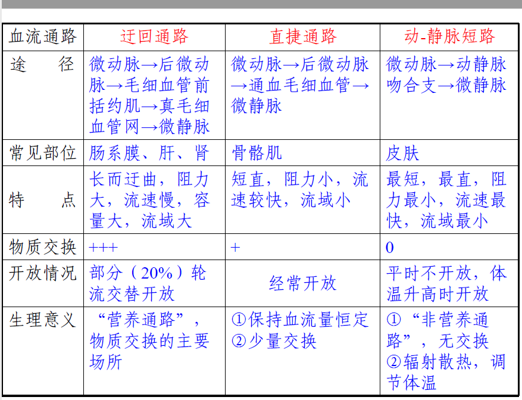
Characteristics of Microcirculation: Low blood pressure, slow blood flow, large exchange area
Interstitial Fluid Formation Principles and Influencing Factors
Principles: Fluid from plasma passes through capillary walls and forms interstitial fluid, then reabsorbed by capillaries.
Effective filtration pressure = (capillary blood pressure + interstitial fluid colloid osmotic pressure) - (plasma colloid osmotic pressure + interstitial fluid hydrostatic pressure)
Influencing Factors: Capillary blood pressure (low pressure leads to less interstitial fluid), plasma colloid osmotic pressure (↓ osmotic pressure → ↑ interstitial fluid), capillary wall permeability, lymphatic drainage
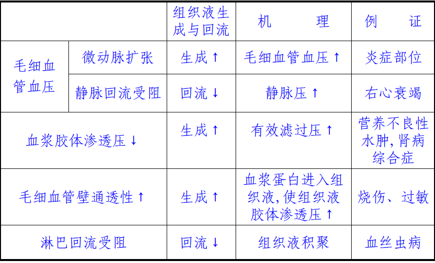
Lymph Formation Principles and Significance
Concept: Lymph is formed from interstitial fluid entering lymphatic vessels.
Formation Principles: Lymphatic vessels’ structure (one-way open) and generation of pressure (interstitial fluid - lymph pressure difference)
Significance: Recovers proteins, transports fats and other nutrients, regulates fluid balance, contributes to defense and immune functions
Regulation of the Heart
Neural Actions on the Heart (Sympathetic and Parasympathetic Effects on Force, Rate, and Conduction)
Preganglionic fibers / Postganglionic fibers
Cardiac Sympathetic Nerves → ACh · N1 Acetylcholine Receptor → Norepinephrine NE · β1 Receptor → cAMP↑
| Positive Chronotropic Effect | Increased phase 4 depolarization → Increased Heart Rate |
|---|---|
| Positive Dromotropic Effect | Increased Ca influx → Increased phase 0 upstroke speed → Increased Atrioventricular Conduction |
| Positive Inotropic Effect | Increased Ca influx → Increased phase 2 Ca influx → Increased Myocardial Contractility |
Cardiac Vagus Nerves → ACh · N1 Acetylcholine Receptor → ACh · M Receptor → cAMP↓
| Negative Chronotropic Effect | Decreased phase 4 depolarization → Decreased Heart Rate |
|---|---|
| Negative Dromotropic Effect | Increased Ca influx → Decreased phase 0 upstroke speed → Decreased Atrioventricular Conduction |
| Negative Inotropic Effect | Increased Ca influx → Decreased phase 2 Ca influx → Decreased Myocardial Contractility |
Neural Actions on Blood Vessels (Sympathetic Vasoconstrictor Fibers, Cardiovascular Centers)
Maintaining a certain level of tension → Maintaining a certain blood pressure → Meeting the perfusion needs of various organs
Acts on smooth muscles
Action: Regulates blood distribution throughout the body
Cardiovascular Centers: Medulla oblongata (primary center), Spinal cord (final pathway for outgoing information)
Pressure Reflex - Pathways, Effects, Significance
Pathways:
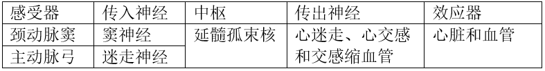
Significance: Rapidly adjusts arterial blood pressure, maintaining relative stability
Pressure Receptors—Carotid Sinus + Aortic Arch
Chemoreceptors—Carotid Body + Aortic Body
Pressure Receptor Effects: Increased Blood Pressure → Increased Pressure Receptor Impulses → Cardiac Sympathetic Stimulation, Vasoconstrictor Neural Inhibition, Cardiac Vagal Stimulation → Decreased Heart Rate, Cardiac Output, Blood Pressure
Chemoreceptor Effects: Increased → Increased Chemoreceptor Impulses → Vagal Stimulation → Vasoconstriction; Decreased Heart Rate, Stroke Volume; Deepened and quickened respiration → Increased Blood Pressure
Hormonal Regulation (Norepinephrine, Epinephrine, Renin-Angiotensin System)
| Norepinephrine (N) | Epinephrine (NE) | |
|---|---|---|
| Binding Sites | α, β Adrenergic Receptors | α Adrenergic Receptors |
| Effects | Heart+ (with β) and Vasoconstriction (with α), Vasodilation (with β) | Increased Diastolic and Systolic Pressure, Raised Blood Pressure |
Renin-Angiotensin System: Vasoconstriction
“The Most”
Albumin: The protein component with the highest concentration in plasma.
Fibrinogen: The component with the largest molecular weight and the lowest concentration in plasma.
Primary buffer pair in plasma: NaHCO3/H2CO3.
Monocyte: The largest white blood cell in volume.
Platelet: The smallest formed element in blood.
Plasmin: The most potent proteolytic enzyme in plasma.
Right Ventricle: The foremost cardiac chamber.
Right Atrium: The rightmost cardiac chamber.
Left Atrium: The rearmost cardiac chamber.
Left Ventricle: The leftmost cardiac chamber.
Foramen ovale: The thinnest part of the interatrial septum.
Sinus node: The area with the highest intrinsic automaticity.
Purkinje cells in the Purkinje network have the largest diameter and fastest conduction velocity. Cells in the bundle of His have the smallest diameter and slowest conduction velocity.
The fastest conduction velocity in the intraventricular conduction system.
A branch of the brachial artery: The primary branch of the brachial artery.
Splenic artery: The largest branch of the celiac trunk.
External jugular vein: The largest superficial vein in the neck.
Inferior vena cava: The largest venous trunk in the human body.
Great saphenous vein: The longest superficial vein in the body.
Thoracic duct: The largest lymphatic vessel in the body.
Aorta: The vessel with the highest pressure and smallest total cross-sectional area.
Blood flow velocity: Fastest in the aorta and slowest in the capillaries.
Arteriovenous shunt: The shortest, most direct, least resistance, fastest flow, and smallest drainage area.
Capillaries: The smallest vessel diameter and widest distribution in the body.
Primary mode of cardiovascular regulation: Neural regulation.
Post-Lesson Exercises
Blood Coagulation Process
Arteriole contraction, platelet aggregation, and release of coagulation factors.
(1) Activation of Factor X: Can be achieved through an intrinsic or extrinsic pathway.
(2) Activation of Prothrombin (Factor II): Formation of prothrombin activator is the rate-limiting step in the entire clotting process.
(3) Conversion of Fibrinogen (Factor I) to Fibrin.
Internal Pathway: Coagulation process entirely reliant on the activation of Factor X by intrinsic plasma coagulation factors.
Factor XII comes into contact with exposed subendothelial collagen fibers, leading to Factor XII activation, thereby initiating the clotting process.
External Pathway: Relies on tissue releasing Factor III to activate Factor X.
Factor III originates from tissue rather than from vessel trauma-induced bleeding, allowing Factor III to enter the vessel, activating Factor VII.
Disclaimer: This blog content consists of class notes and is intended for sharing purposes only. Some images and content are sourced from textbooks, teacher presentations, and the internet. If there are any copyright issues, please contact aursus.blog@gmail.com for removal.